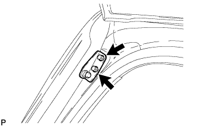
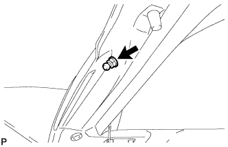

Back Door Stay Assembly Installation |
| 1. Install Back Door Damper Stay Bracket Upper LH |
Clean the threads on the body side with white gasoline.
Apply adhesive 1324 to each thread.
 |
Install the back door damper stay bracket upper LH with the 2 bolts.
| 2. Install Back Door Stay Bolt |
When replacing the back door stay bolt with a new one
Clean the threads on the body side with white gasoline.
 |
Install the back door stay bolt.
When reusing the back door stay bolt
Clean the threads on the body side with white gasoline.
Apply adhesive 1324 to each thread.
Install the back door stay bolt.
| 3. Install Back Door Stay Assembly LH |
Install the stop ring to the back door stay assembly LH.
Engage the ball joint and install the back door stay assembly LH.
Check that the back door stay assembly LH is engaged with the ball joint and does not come off.